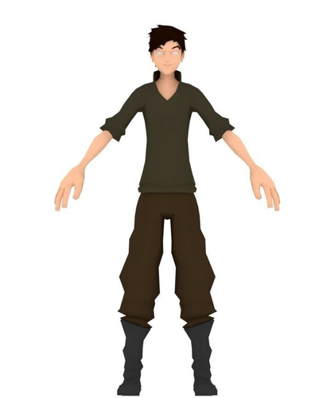

First look of Kevin!
Good progress!
By Zac, Game Developer
Overall this week was quite a productive one for us game students.
In our group meeting we finalised the narrative that we wanted to go with for
the game which was ‘A rich man has sent you on an adventure to an island to
find the hidden treasure that’s shown on the map you were given.’
We went with this as it keeps the game lighthearted and keeps in with our target audience of 12+.
We also decided on a name for the game which was ‘Kevin’s Adventure’.
We also started to get a basic layout of the level made within the project.
Some simple trees, coins and a path were added which started to form the
basic outline of the main route that the player would need to take.
Points of interest in the form of large pink cubes were also added to
assist in showing the player where they need to go.
.png)
.png)
.png)
Work has also started with the ‘day/night cycle’ that we want to add to the game
to help add some immersion to the game.
The main task of finding and unlocking the treasure has also begun and it basically
involves the player needing to find certain items hidden within the island and use
them to unlock the door to the main treasure.
Model that we want to use for the main character ‘Kevin’ was decided.
We went for a model that was; low poly, had simple features, was distinguishable
and suited for the adventure type narrative that we are going with.
